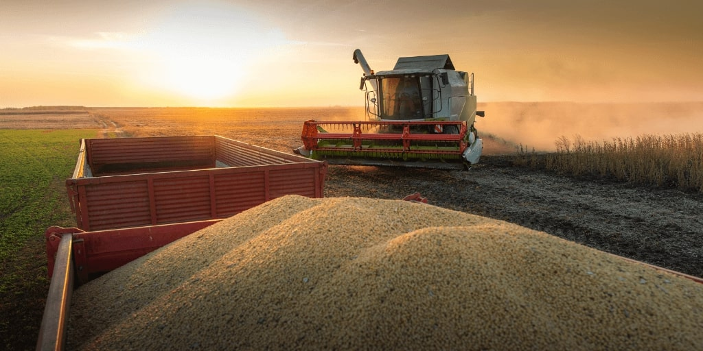
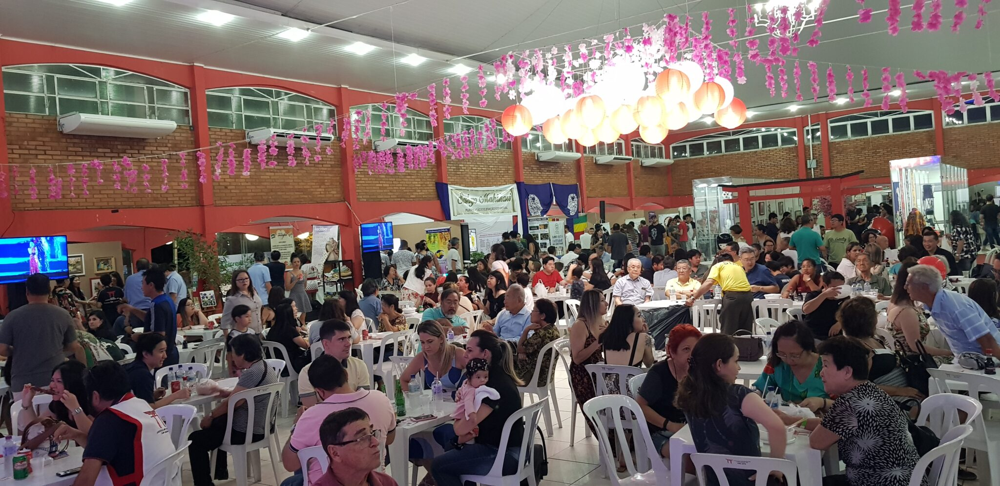
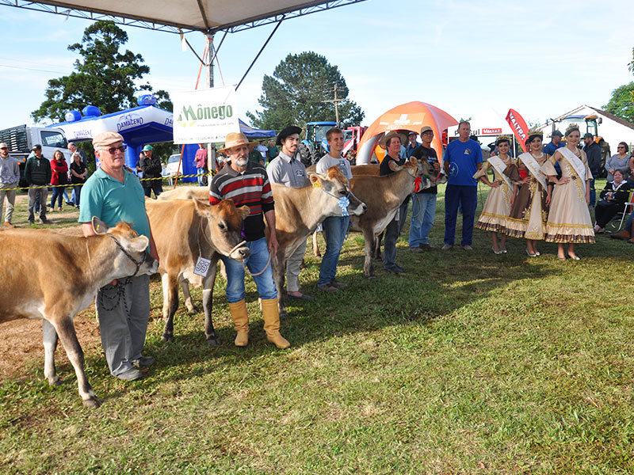

Data: 12-14 de agosto
Local: Fazenda São João, Interior de São Paulo
Descrição: A Festa do Milho é uma celebração das tradições rurais, com muitas atrações típicas, comida caseira e música ao vivo.
Data: 25-27 de setembro
Local: Fazenda do Sol, Minas Gerais
Descrição: Um festival dedicado à cultura do café, com degustações, oficinas de produção e shows de artistas locais.
Data: 15-20 de março
Local: Fazenda paraíso, paraná
Descrição: Um festival dedicado as produções dos agricultores locais com degustações, oficinas de produção e shows de artistas locais.
Data: 20 de janeiro
Local: centro de eventos, mato grosso
Descrição: uma celebração da cultura do interior, com degustações, oficinas de produção e shows de artistas locais.
Data: 8-10 de abril
Local: Fazenda do rancho, santa catarina
Descrição: Um festival dedicado à cultura do campo, com degustações, oficinas de produção e shows de artistas locais.


